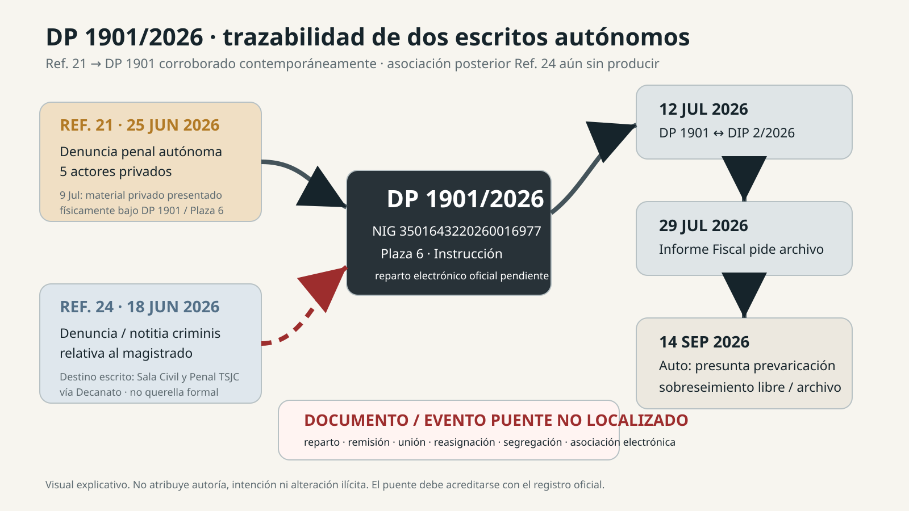

José Daniel Acosta Matos^
Abrir el registro controlado de esta persona
25 JUNIO 2026 · REFERENCIA DIARIA 21 · DENUNCIA AUTÓNOMA CONTRA ACTORES PRIVADOS
Entre el 9 y el 12 de julio, DP 1901/2026 estaba siendo utilizado y entendido contemporáneamente como el expediente de esta denuncia. Sigue pendiente el documento de incoación y reparto certificado que establezca qué escrito creó DP 1901.
La portada sellada de 25 de junio documenta una denuncia penal autónoma contra las cinco personas siguientes. Cada alegación conserva su propio sujeto, capacidad, acto u omisión, fuente, prueba contraria y necesidad probatoria. Figurar en una denuncia no acredita culpabilidad.
Abrir el registro controlado de esta persona
Abrir el registro controlado de esta persona
Abrir el registro controlado de esta persona
Abrir el registro controlado de esta persona
Abrir el registro controlado de esta persona
El signo ^ confirma únicamente la identidad canónica. No certifica una alegación, función, conocimiento, dolo, causalidad ni responsabilidad. Los vínculos familiares, societarios o profesionales no transfieren responsabilidad.
| Fecha / referencia diaria | Objeto | Relación controlada |
|---|---|---|
| 18 junio · Ref. 22 | Denuncia contra el Administrador Concursal | Gil la identifica como la primera denuncia repartida y abierta, después DP 1956/2026. El listado ATLANTE de julio muestra DP 1956 en la plaza 1; sigue pendiente el puente certificado entre entrada y DP. |
| 18 junio · Ref. 24 | Notitia criminis relativa al magistrado | Escrito separado dirigido al TSJC, expresamente no presentado como querella formal. Su aportación de 25 de junio pertenece a este mismo registro de entrada. |
| 25 junio · Ref. 21 | Denuncia contra cinco actores privados | Presentación autónoma. Su ampliación de 9 de julio fue presentada físicamente bajo DP 1901/2026, plaza 6; incorporación electrónica y reparto originario pendientes de certificación. |
Las referencias diarias 21, 22 y 24 son localizadores de entrada, no números de procedimiento. Su numeración —ni la comparación entre 1901 y 1956— certifica el orden de creación entre distintas plazas judiciales.
Relato expresamente afirmado: Gil declara como verdad y hecho que el 25 de junio Ref.24 estaba intacta, sin escanear y sin repartir, por lo que observó y verificó ante el Decanato y el TSJC; vio cómo se unía su aportación a los documentos de la semana anterior. Señala que ese día o poco después tenía confirmación de que la denuncia contra el Administrador ya había sido remitida a un órgano judicial y abierta. Recuerda la plaza 1 con reserva; el listado ATLANTE de 9 de julio muestra de forma independiente DP 1956 en la plaza 1.
Posición categórica de parte: Gil mantiene que DP 1901 se abrió para la denuncia contra los actores privados y que la notitia relativa al magistrado quedó asociada después. Rechaza una reconstrucción según la cual el escrito del magistrado originó DP 1901 o ambos escritos lo iniciaron simultáneamente. Esta posición se registra expresamente, separada de lo observado físicamente y de los registros internos de creación y asociación aún no producidos.
Gil afirma expresamente su relato como verdad y hecho. Esta síntesis editorial no presupone firma, juramento ni certificación institucional independiente. El documento de incoación y la trazabilidad certificada deben confirmar o contradecir la secuencia interna afirmada.
El registro existente consigna el procesamiento íntegro de la capa de texto de los tres PDF fuente. Las páginas y los hashes identifican versiones controladas; por sí solos no certifican los bytes exactos presentados, la admisión judicial, la incorporación electrónica ni el traslado al Ministerio Fiscal.
| Fuente / extensión | Qué está controlado | Lectura pública / fuente pendiente |
|---|---|---|
| Denuncia de 25 junio · 86 páginas | Fuente final operativa; texto procesado 86/86. Una portada sellada separada acredita la presentación bajo referencia diaria 21. | Índice público de materias más abajo; PDF original reservado. Actualmente no se enlaza un PDF íntegro derivado autorizado para publicación. |
| Ampliación de 26 junio · 26 páginas | Fuente de la ampliación inmediata; texto procesado 26/26. La identidad de sus bytes es distinta del justificante de presentación/incorporación. | Registro público de control de fuentes; siguen pendientes las pruebas exactas de presentación e incorporación. Sin PDF público derivado localizado. |
| Ampliación firmada de 9 julio · 19 páginas | Fuente firmada; texto procesado 19/19. Una portada sellada separada acredita la presentación física bajo DP 1901, plaza 6. | Síntesis pública de materias más abajo; incorporación electrónica y corpus exacto trasladado a Fiscalía abiertos. Sin PDF público derivado localizado. |
| Presentación sellada bajo DP 1901 · 9 julio | Portada sellada de la ampliación identificada en el registro de cierre de fuentes; distinta del PDF de 19 páginas. | Resumen público de procedencia. La portada original permanece en custodia privada; sin imagen/PDF derivado público autorizado localizado. |
Disponibilidad de PDF: los tres escritos fuente y la portada sellada no se publican como archivos originales. Esta página ofrece su inventario controlado y una síntesis pública. No presenta un documento sustitutivo ni afirma que los escritos íntegros sean públicamente visualizables.
El índice controlado comprende: personas denunciadas y entidades relacionadas; objeto y disciplina probatoria; competencia territorial y autonomía procesal; cuestiones de investigación; cronología fáctica; individualización de conductas; daños, beneficios y causalidad; calificación penal provisional y prescripción; custodia asimétrica de la prueba; diligencias solicitadas; protección del denunciante y trazabilidad; y suplico. Son materias alegadas, no hechos declarados probados.
La ampliación indexada desarrolla la cadena alegada de autoridad aparente, decisión y valor; documentos comunitarios y uso posterior; conocimiento y representación individualizados; perímetro alegado de RICPE y explotación hotelera; cuentas comerciales, clientela y valor de plataforma; custodios profesionales; y diligencias prioritarias. Cada conexión exige su propia fuente y prueba específica por actor.
3f4bd2bbbc963605e4cc94bc73d116157e2bf4a2266e2285b013f38de9e90736a7f057fd99d0bdf1a891cf4610f69ed19788d2e40f9f23a6ff66fc6255d978460d42dcbe30679331c557f4c3750e478e592a9a449c6b5ecb84e32f6fa56ad16fdfad6f405b7a2ec047a98a7183a9cbfd0698427d3925d02b2a50b4de76de8f71| Fecha | Clase de evidencia | Alcance acreditado / límite |
|---|---|---|
| 25 junio | Presentación sellada + relato contemporáneo | Ref. 21 es una denuncia separada contra actores privados. La aportación Ref. 24 pertenece al carril del magistrado. Un relato del mismo día comunicó que ese paquete seguía en el Decanato. |
| 9 julio | Listado oficial + presentación física sellada | ATLANTE muestra DP 1901/plaza 6 y DP 1956/plaza 1, con Gil como denunciante, sin identificar denunciados u objeto. El sello separado acredita presentación de material de actores privados para DP 1901. |
| 9–12 julio | Correspondencia contemporánea resumida | Las comunicaciones a los abogados identificaron DP 1901 con CAM/actores privados/Comunidad y DP 1956 con el Administrador. El relato de 12 de julio describió seguimiento en la plaza 6 sobre aquel asunto privado. No sustituyen al reparto certificado. |
| 12 julio | Providencia firmada | El mismo DP se trasladó al Ministerio Fiscal por cinco días para informar sobre admisión en relación con DIP 2/2026. Se acredita esa vinculación para tal finalidad, no la identidad originaria ni una acumulación. |
| 29 julio | Informe referido por el Auto posterior | El Auto registra un informe fiscal que interesó archivo. Siguen sin localizarse su texto firmado, autor, reparto y corpus exacto recibido. |
| 14 / 18 septiembre | Resolución judicial / relato de recepción | El Auto de 14 de septiembre caracteriza DP 1901 como presunta prevaricación judicial y acuerda sobreseimiento libre/archivo. Gil recibió copia en papel el 18 de septiembre; la notificación jurídicamente operativa sigue pendiente de certificación. |
Esta es la pregunta precisa de trazabilidad que plantea el relato de Gil. Ni los hechos comunes ni el contexto concursal compartido explican la elección de destino. Las fuentes actualmente localizadas no identifican quién realizó alguna asociación, cuándo, por qué vía ni mediante qué acto formal.
Un puente no producido no prueba manipulación intencional, acumulación ilícita ni responsabilidad personal. Deben contrastarse con los registros una explicación lícita de reparto o competencia, una asociación administrativa o una identificación operativa equivocada. La resolución adversa permanece incorporada al análisis.
REF. 21 → DP 1901 CORROBORADO CONTEMPORÁNEAMENTE · REPARTO OFICIAL / HISTORIAL DE ASOCIACIÓN REF. 24 PENDIENTE

Gil Marer afirma expresamente como verdad y hecho que Ref.24 estaba intacta, sin escanear y sin repartir el 25 de junio, por su observación y comprobaciones ante el Decanato y el TSJC. Presenció la unión de la aportación al conjunto anterior de 18 de junio/Ref.24. Su testimonio contradice expresamente la posibilidad de escaneo previo antes sugerida. Sigue pendiente el contraste independiente con el historial oficial; no se infieren firma ni juramento.
El texto dirigido al CGPJ y fechado el 25 de junio recoge la anotación inicial “25”, su sustitución por “18”, la adición de “24” y la unión física. Deben conservarse ambas fechas reales. También relata que el 18 de junio el personal exigió añadir “Al Juzgado de Instrucción que por turno corresponda”, manteniéndose el encabezamiento original al TSJC. Esa intervención inicial y la tramitación electrónica posterior requieren reconstrucciones diferenciadas.
El texto contemporáneo respalda la custodia física y la falta de remisión; no dice expresamente “sin escanear”. La ausencia de escaneo y reparto se recoge como afirmación actual expresa de Gil. Su correo del 25 de junio indica que la denuncia del AC ya había sido remitida, pero se esperaba completar registro y numeración. La posibilidad de que Ref.24 permaneciera allí varias semanas más es incierta, no una fecha fijada.
La cronología Ref. 21 / Ref. 24 y la afirmación presencial de que Ref. 24 seguía intacta, sin escanear y sin asignar el 25 de junio están incorporadas al borrador completo. La certificación electrónica del historial de creación/asociación sigue pendiente.
Publicación informativa: no equivale a presentación ante el CGPJ, recurso judicial contra el Auto ni respuesta presentada en E.G. 745/2026.